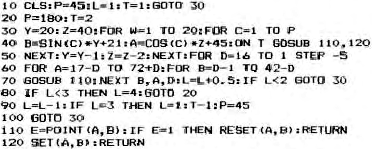
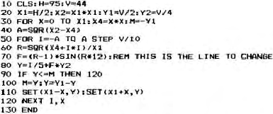

Micropower |
Volume 2 · Number 4 · September 1982 |
| Page 24 of 36 |
|---|
Here are two more ‘pretty picture’ plotting programs. The first is from Mr. D.P. Jackson of Harworth, Nr. Doncaster.

The second offering comes from Mr. N.J. Thomas of Kings Lynn and is as follows.

Mr. Thomas also points out that anyone who has a Nascom 1 and Econographics will run into problems when trying to fit the Snowdinger (1) circuit. They both try and sit over the same place. He suggests that Snowdinger be brought out on ribbon cable to hang beside the PIO.
Finally, can anyone tie up the PIO pin outs of the Nascom 1 and 2 so that the EPROM Programmer circuit can be built by Nascom 1 owers.
Besides articles for the magazine, these are the only two letters that I have had since the last issue. I don’t think that you are really trying. A nice feature to add to the magazine would be a permanent letters page in which we could set up a problem and answer series. Fire away.
| Page 24 of 36 |
|---|